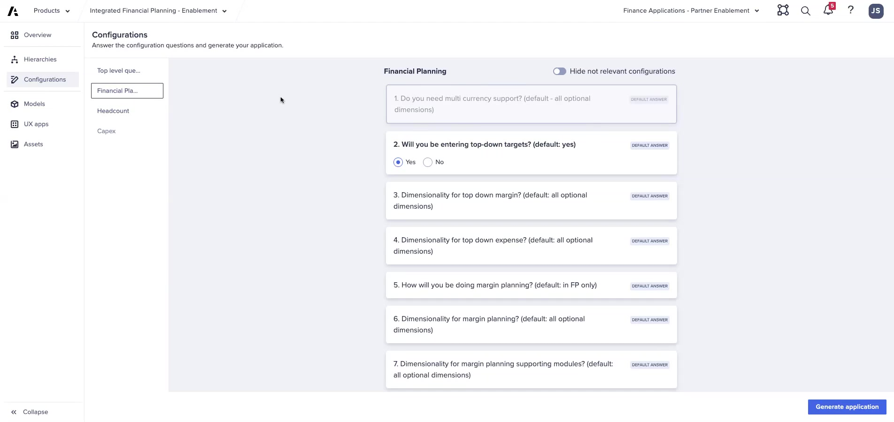
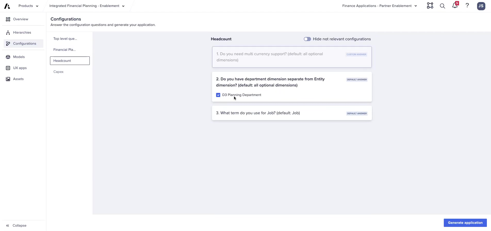
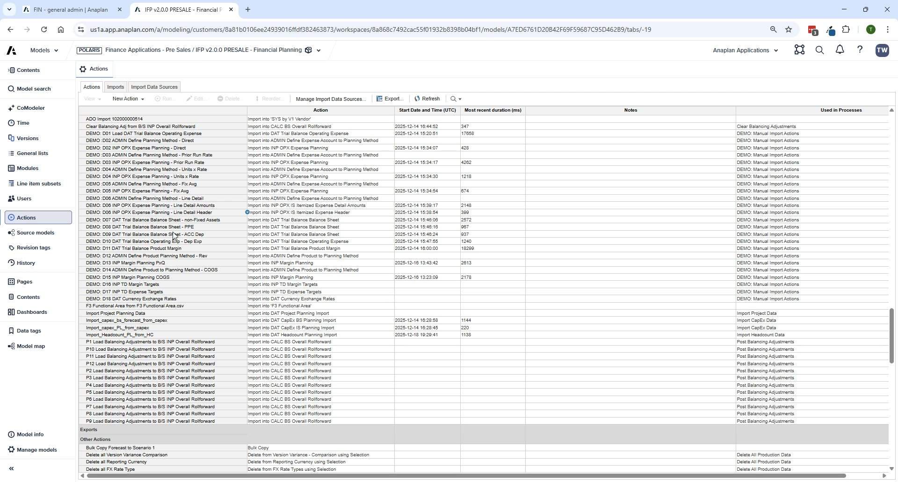

Lab B: Full 3-Statement Configuration
Extend FictoCorp with CapEx, Balance Sheet, Cash Flow, and Geography
Module 2Lab45–60 min


[SCREENSHOT NEEDED: Generation success confirmation screen — PAF showing all 4 models generated with green status]
Capture the generation completion screen showing Admin, FP, HC, and CE models all generated successfully with no errors. Full-generation recording not available in current source material.

ℹ Starting Point
Begin with a fresh workspace or re-run the Application Framework from scratch. Do not extend Lab A's workspace.
What Changes from Lab A
| Setting | Lab A | Lab B |
|---|---|---|
| CapEx | Option B — GL level | Option A — IFP CapEx Model |
| Balance Sheet | No | Yes |
| Cash Flow | No | Yes |
| Geography | No | Yes — Geography (2 levels: All Regions → Americas · EMEA) |
| Models Generated | Admin + FP + HC (CE deleted) | Admin + FP + HC + CE (all 4 kept) |
Requirements Brief — FictoCorp Phase 2
| Requirement | Your Configuration Choice |
|---|---|
| All Lab A settings | Same — Entity, Dept, Product, Customer, HC Option A, multi-currency |
| Geography | Yes — Geography (2 levels) |
| CapEx | Option A: IFP CapEx Model |
| Balance Sheet | Yes |
| Cash Flow | Yes — indirect cash flow |
| BS list name | Planning Account BS Hierarchy (default) |
| CF list name | Planning Account CF Hierarchy (default) |
| CE model questions | Multi-currency: Yes; IS + BS list names: defaults |
Lab Steps
- Configure Top-Level questions — same as Lab A, plus Geography (2 levels), CapEx Option A
- Hierarchy Configuration — add Geography (2 levels, name: 'Geography')
- FP questions — same as Lab A, plus Balance Sheet: Yes, Cash Flow: Yes
- CE questions — multi-currency: Yes, IS list: default, BS list: default
- Generate and review logs
- Post-generation — complete all required tasks including CapEx General Admin setup
- CapEx General Admin — set entity-to-dept mapping, asset types, depreciation accounts, CWIP account, FX rate type
- Run FIN – Import from CapEx Model
- FIN – BS – Manage Planning Methods — assign a method to every BS account
- FIN – BS – Manage Cash Offset Accounts — categorize every BS account's cash impact
- FIN – BS – Cash Flow Mappings — map every leaf-level BS account to a CF line
- Run the Balancing Routine — confirm BS balances
⚠ CapEx Dimension Constraint
CapEx in v2.0 is planned at Entity level ONLY — no Department, Geography, or other dimensions. The entity-to-department mapping in CapEx General Admin handles distribution of depreciation costs to the correct P&L dimensions.
Debrief Questions
- What is the purpose of the Cash Offset Accounts mapping? What happens if an account is missing?
- Why does the Balancing Routine run month-by-month sequentially rather than all at once?
- If a customer wants to track CapEx by department, what are their options?
- When would you choose Geography at 3 levels vs. 2 levels?
- What is the difference between a Direct Load and a Transformation Load in ADO?
💡 Full 3-Statement Validation
After completing Lab B, check that the balance sheet balances by running the Balancing Routine, then navigate to Reporting & Analysis → Balance Sheet & Cash Flow Validations.